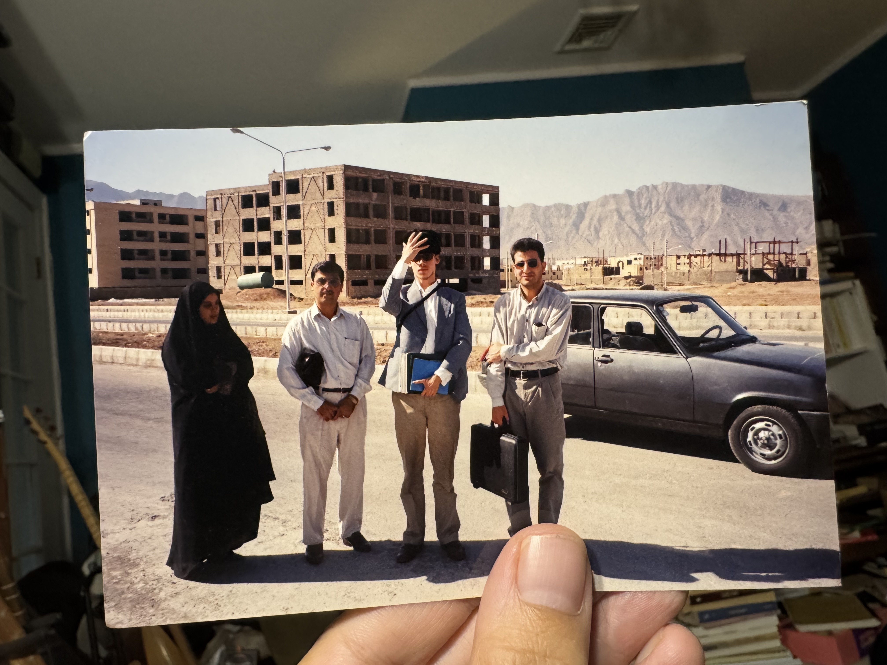
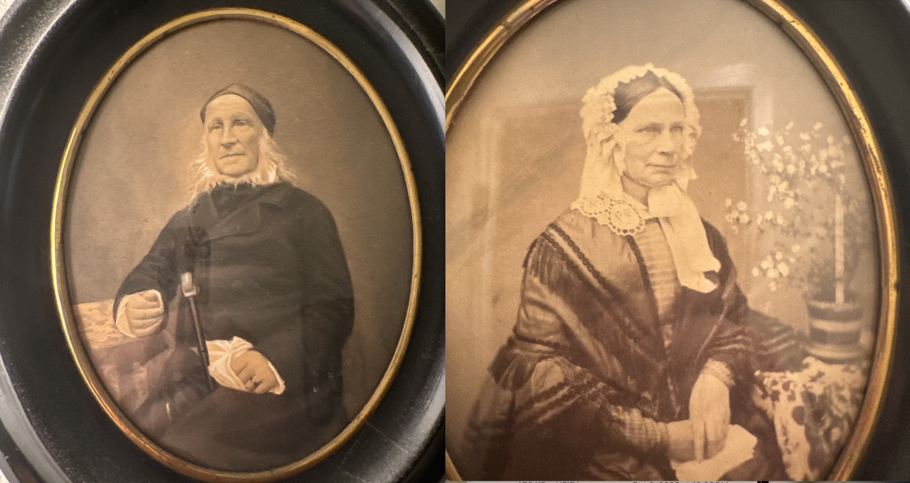
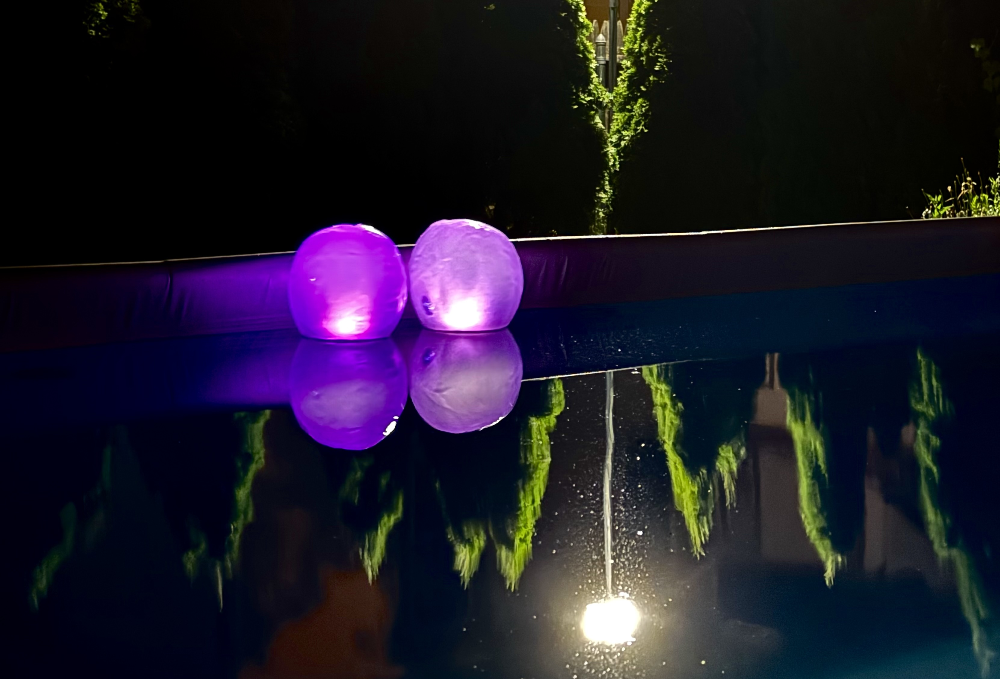
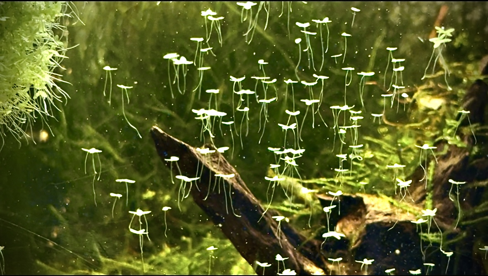

Sepahanshahr 1999
I visit these moments often.

My daytime walks
have become more midtown in recent years.

My visits to my childhood home
involve more and more staring at my forebears' portraits.

On my first trip to Providence to visit Turkmen friends
I took the opportunity to visit another old friend and his sister was adamant that I photograph their pool at night.

That particular building, with the notorious trash chute,
attracts my attention much more that I would expect.

I took this photo
to send my Turkmen friend so he could show his father Abdulghaffar.

I used to live right here
but it looked so different when I recently walked by with Baldo, who was visiting.

One never knows which suburban homes
have shrimp farms inside
